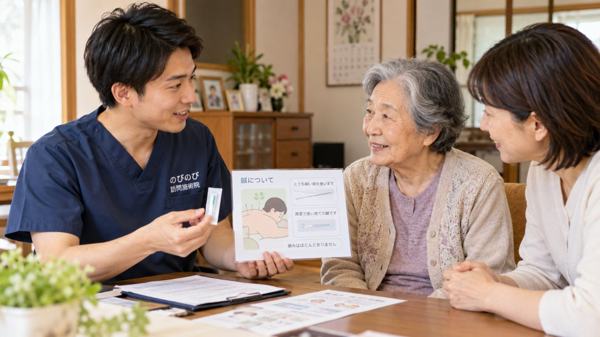

「鍼は痛そう」「お灸は熱そうで跡が残るのでは」。初めて鍼灸を受ける前は、そんな心配がつきものです。ご高齢のご本人はもちろん、勧めるご家族も、痛い思いをさせないか、家に人を上げて大丈夫かと気になるところでしょう。結論から言えば、鍼灸で使う鍼は髪の毛ほどに細く、多くの方はチクッと感じる程度。お灸も我慢するものではなく、心地よい温かさに整えて行います。刺激の強さは一人ひとりに合わせて加減できます。
この記事のポイント
鍼灸の鍼は注射針とは別の道具で、刺してもほとんど痛みを感じない方が多く、お灸も温かさを調整して行います。鍼は使い捨てで衛生管理のもとに施術し、寝たきりや認知症の方でも、ご自宅のベッドや布団の上で無理なく受けられます。合わなければ途中でやめてかまいません。慢性的な痛みなどで医師が必要と認め通院がむずかしい場合には、はり・きゅうの医療保険が使え、1回の総額3,950円、1割負担で約395円が目安です。要介護認定はなくても受けられます。
初めての当日は、いきなり鍼から始まりません
予約した日にちが近づくと、当日どんなふうに進むのかが気になってくるものです。玄関を開けたら、すぐに横になって鍼を打たれるのではないか。そんなふうに身構えてしまう方もいますが、実際はそうではありません。最初に行うのは、体の調子や困っている場所をうかがうカウンセリングです。どこがつらいのか、いつごろから痛むのか、日常のどんな動きで気になるのかを、あわてず順を追って聞かせていただきます。そのうえで血圧やその日の体調を確かめ、体の状態に合わせて施術に入ります。初回だからといって特別なことをするわけではなく、まずはお互いに様子を知るところから始まる、と思っていただければ大丈夫です。申込みからここに至るまでの手続き全体は「お問い合わせから施術開始までの流れ」にまとめてありますので、あわせて目を通しておくと当日の見通しが立てやすくなります。
服装は、いつもの普段着のままで構いません
受けるにあたって着替えを用意する必要はありません。ゆったりした普段着であれば、そのままの格好で受けていただけます。締めつけの少ない服だと腕や脚を軽くまくりやすく、施術する側も助かりますが、それも絶対の条件ではありません。パジャマや部屋着のままの方もいらっしゃいます。わざわざ何かを準備しなければと気負う場面はほとんどなく、いつも自宅で過ごしている、その延長で受けられます。
寝たまま受けられて、広い部屋もいりません
訪問の施術は、布団やベッドに横になったまま受けられます。起き上がったり座り直したりが難しい方でも、寝たきりに近い状態のまま受けていただけますので、体勢のことで心配はいりません。専用の広い部屋を空けておく必要もなく、いつも寝ている場所のまわりに、施術者が座れるくらいの余白があれば十分です。片づけに追われて疲れてしまっては本末転倒ですから、無理に部屋を整えようとしなくて構いません。ふだんの暮らしの場に、こちらがおじゃまする形になります。
鍼が苦手なら、お灸や手技の比重を増やせます
鍼にどうしても抵抗があるという方には、鍼の刺激をごく浅く短くしたり、お灸や手技、ストレッチの比重を調整しながら組み立てる進め方もあります。最初から全部を受けなければいけない決まりはありません。少し鍼を試してみて、やはり合わないと感じたらそこでやめて構いませんし、その日の気分で本数を減らすこともできます。力加減も同じで、強すぎる、あるいは物足りないと感じたら、その場で遠慮なくお伝えください。我慢して受けるものではありませんから、感じたことは口に出してもらえたほうが、こちらもちょうどよい加減を探しやすくなります。
痛くないか、熱くないか、途中でやめてよいか
初めての方がいちばん気にされるのが、この三つだと思います。鍼は髪の毛ほどの細さで、チクッとする程度か、ほとんど感じないという方が多いです。お灸も熱さを我慢するものではなく、じんわりと温かいと感じるくらいに調整します。もし痛みや熱さが強ければ、その瞬間に手を止めて加減しますので、声をかけてください。そして、途中でやめたくなったらやめて大丈夫です。最後まで受け切らなければならない、という縛りはありません。体の反応を見ながら、その日にちょうどよいところで区切ります。鍼灸やマッサージは病気そのものを治すものではなく、感じ方や体の変化には個人差があります。そのため、初回は無理をせず、体に合うかどうかを確かめる時間だと考えていただくのがよいと思います。
家族が同席してよく、所要時間は20分から30分ほど
施術のあいだ、ご家族がそばにいて構いません。むしろ、初めてのうちは近くに家族がいるだけで気持ちが落ち着き、体の力も抜けやすくなります。気になることがあれば、ご本人に代わって質問していただいてもかまいません。1回あたりの施術時間は、おおよそ20分から30分が目安です。長く体を横たえているのがつらい方でも、負担になりにくい長さに収めています。終わったあとは血のめぐりが変わって少しだるく感じることもありますが、休むうちに落ち着くことがほとんどです。初回に持っていただくものや必要な書類については「申し込みに必要なもの・書類」で確認できます。
初回は初検料が別にかかります
費用のことも、初めのうちにはっきりさせておきたいところだと思います。施術1回あたりの総額は3,950円で、医療保険の自己負担割合に応じて、1割の方でおよそ395円が目安です。週に2回受けた場合、1割負担なら月におよそ3,160円になります。ただし初回に限っては、この施術費とは別に初検料がかかります。体の状態をはじめて詳しく確かめるための費用で、初回だけのものです。保険が使えるのは、神経痛・リウマチ・頸肩腕症候群・五十肩・腰痛症・頸椎捻挫後遺症といった慢性の痛みについて、医師が施術を必要と認めて同意書を出した場合です。要介護認定を受けていなくても対象になり、介護保険の限度額とは別の枠として併用できます。同じ部位で医療保険のリハビリを受けている場合、その部位の鍼灸は同時には算定できない点だけ、あらかじめ知っておいてください。関節を動かす機能訓練は施術に含みます。金額があらかじめ決まっているので、初めてでも見通しを立てやすいはずです。
よくある質問
鍼は本当に痛くないのですか？
感じ方には個人差がありますが、チクッとする程度か、ほとんど感じない方が多いです。鍼灸の鍼は髪の毛ほどに細く、注射針とは別の道具です。痛みがあればその場で加減しますので、我慢する必要はありません。
お灸でやけどをしたり跡が残ったりしませんか？
心地よい温かさを感じる程度に整えて行い、熱さが強ければすぐに加減します。水ぶくれや跡が残るような熱さにはしません。無理に熱くすることはありません。
刺激に弱いのですが受けられますか？
本数を少なめに、刺激を穏やかにして始め、体の反応を見ながら加減できます。強い刺激ほど効くわけではないので、ご高齢の方や敏感な方でも無理なく受けていただけます。
鍼は使い回しではありませんか？感染が心配です
使い捨ての清潔な鍼を一人ひとりに使い、使い回すことはありません。清潔な器具と衛生管理のもとで、はり師・きゅう師の国家資格を持つ者が施術しますので、安心して受けていただけます。
寝たきりや認知症でも受けられますか？
受けられます。ベッドや布団の上で寝たままの姿勢のまま施術でき、移動の負担がありません。認知症のある方には、声をかけながらその日の様子に合わせてゆっくり進めます。
施術のあとに体がだるくなることはありますか？
血のめぐりが変わることで、だるさや眠気が一時的に出ることがあります。多くは休むうちに落ち着きます。必ず出るものではなく、気になる反応が続くときは次回うかがった際にお知らせください。
受けてみて合わなければやめられますか？
途中でやめてかまいません。初回に軽く体験して刺激の強さを確かめられますし、合わないと感じれば無理に続ける必要はありません。それで費用の面で不利になることもありません。
保険を使うのに要介護認定は必要ですか？
要介護認定は必要ありません。慢性的な痛みなどで医師が必要と認め、通院がむずかしい場合に、医師の同意書があれば、はり・きゅうの医療保険が使えます。同意書の手続きはのびのびが段取りします。